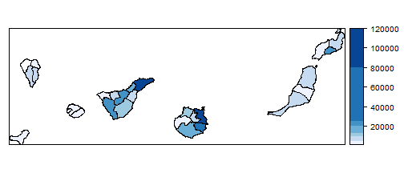
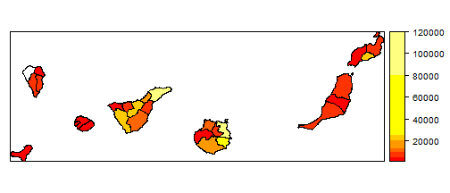
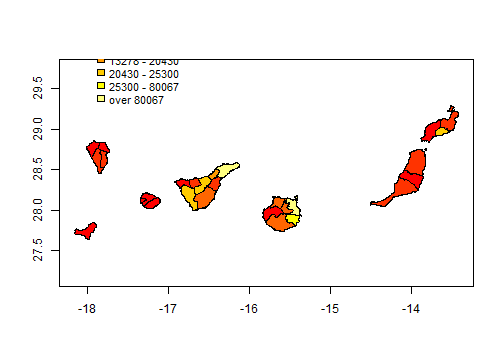
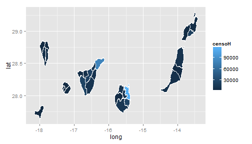
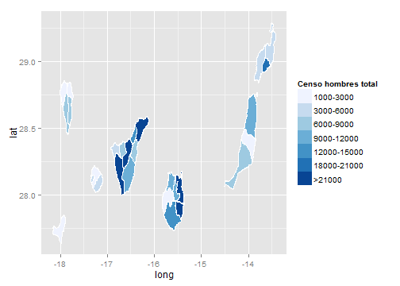
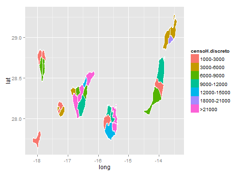
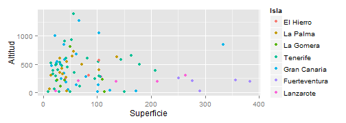

- Esta librería es un conjunto de herramientas para leer y manejar objetos espaciales.
- En particular, permite cargar archivos ESRI shapefiles (.shp).
- Esta librería se suele utilizar en combinación con otras: sp (clases y métodos para datos geo-espaciales), RColorBrewer (paletas de colores) y ggplot2 (libraría gráfica).
Website (blog): http://rspatialtips.org.uk/
Tutorial: https://dl.dropbox.com/u/9577903/broomspatial.pdf
Curso de introducción y manejo de R
HTML 5
Carlos Pérez González
Departamento de Estadística, Investigación Operativa y Computación (ULL) - Fundación Universidad Empresa (FEULL)
La librería maptools
La librería maptools
Cargamos los archivos de las 27 comarcas de canarias:
library(maptools)
canary.counties <- readShapeLines(fn = "ISTAC_comarcas27_R.shp")
plot(canary.counties, axes = TRUE, col = "red")

La librería maptools
Vamos a cargar el mapa en forma de polígonos (Poly Shape):
canary.counties <- readShapePoly(fn = "ISTAC_comarcas27_R.shp")
plot(canary.counties, axes = TRUE, col = "red")

La librería maptools
Para examinar el objeto canary.counties que hemos cargado:
canary.counties
summary(canary.counties)
slotNames(canary.counties)
canary.counties@data
canary.counties@polygons[[1]]
Observamos que los ejes representados no corresponden a las escalas de latitud y longitud de un mapa:
print(proj4string(canary.counties))
proj4string(canary.counties) <- "+proj=longlat +datum=WGS84"
print(proj4string(canary.counties))
plot(canary.counties, axes = TRUE)
La librería maptools
Para representar una variable en un mapa, lo más común es asociar al slot "data" los valores de la variable utilizando el comando merge(). Por ejemplo:
censal.hombres <- data.comarcas.censal[data.comarcas.censal$sexo == "men", ]
canary.tmp <- merge(canary.counties@data, censal.hombres, by.x = "CODCOM", by.y = "comarca",
sort = FALSE)
canary.counties@data$sexoH <- canary.tmp$sexo
canary.counties@data$censoH <- canary.tmp$censo
Tambien se puede utilizar el comando match(). Por ejemplo:
censal.mujeres <- data.comarcas.censal[data.comarcas.censal$sexo == "women",
]
idx <- match(canary.counties@data$CODCOM, censal.mujeres$comarca)
canary.counties@data$sexoM <- censal.mujeres$sexo[idx]
canary.counties@data$censoM <- censal.mujeres$censo[idx]
La librería maptools
Para representar un mapa de intensidad, necesitamos definir una paleta de colores y luego el comando spplot();
library(classInt)
library(RColorBrewer)
n = 7
# obtener una paleta de 7 colores
pal <- brewer.pal(n, "Blues")
# obtener intervalos de clase para 7 colores
int <- classIntervals(canary.counties@data$censoH, n, style = "jenks")
p <- spplot(canary.counties["censoH"], col.regions = pal, at = signif(int$brks,
digits = 2), lwd = 0.4, col = "black")
p

La librería maptools
La comarca con menor valor del censo se puede quedar de color blanco:
# corrección del primer color de la escala
int$brks[1] <- 1000
# comprobar el orden de representación
canary.counties@data[order(canary.counties@data$censoH), ]
Podemos utilizar otras paletas:
# Paletas
# display.brewer.pal(n, 'Blues')
pie(rep(1, n), col = brewer.pal(n, "Blues"))
pie(rep(1, n), col = brewer.pal(n, "YlOrRd"))
pie(rep(1, n), col = heat.colors(n))
pie(rep(1, n), col = terrain.colors(n))
La librería maptools
pal <- heat.colors(n)
p <- spplot(canary.counties["censoH"], col.regions = pal, at = signif(int$brks,
digits = 2), lwd = 0.4, col = "black")
p

La librería maptools
Se pueden utilizar otros métodos para los intervalos de clase:
# Intervalos de clase
int <- classIntervals(canary.counties@data$censoH, n, style = "quantile")
int <- classIntervals(canary.counties@data$censoH, n, style = "pretty")
int <- classIntervals(canary.counties@data$censoH, n, style = "jenks")
La librería maptools
Podemos utilizar otros métodos de representación, plot() + legend():
# Representaciones alternativas
plot(canary.counties, col = pal[findInterval(canary.counties@data$censoH, int$brks,
all.inside = TRUE)], axes = TRUE)
legend(x = -18, y = 30.5, legend = leglabs(round(int$brks)), cex = 0.9, fill = pal,
bty = "n", x.intersp = 0.5)

La librería maptools
Otros métodos de representación, fortify()+ggplot2():
# Otra mas
library(ggplot2)
# convertir el objeto 'SpatialPolygons' en data.frame
canary.fort <- fortify(canary.counties, region = "IDCOM27")
head(canary.fort)
canary.fort <- merge(canary.fort, canary.counties@data[, c("IDCOM27", "censoH")],
by.x = "id", by.y = "IDCOM27", sort = FALSE)
ggplot(data = canary.fort, aes(long, lat, group = group)) + geom_polygon(colour = "black",
fill = "white")
La librería maptools
Entonces:
map <- ggplot(data = canary.fort, aes(long, lat, group = group, fill = censoH)) +
geom_polygon() + geom_path(color = "white")
map

La librería maptools
Otras variantes con ggplot2():
map + scale_fill_gradient(low = "white", high = "black")
map + scale_fill_gradient(name = "censo", breaks = c(10000, 50000, 90000))
map + scale_fill_gradientn(colours = brewer.pal(7, "Blues"), limits = c(1000,
1e+05))
La librería maptools
Podemos utilizar escalas discretas en el gráfico:
canary.fort$censoH.discreto <- cut(canary.fort$censoH, breaks = c(1000, 3000,
6000, 9000, 12000, 15000, 18000, 21000, Inf), labels = c("1000-3000", "3000-6000",
"6000-9000", "9000-12000", "12000-15000", "15000-18000", "18000-21000",
">21000"), include.lowest = TRUE)
head(canary.fort)
La librería maptools
Entonces:
map <- ggplot(data = canary.fort, aes(long, lat, group = group, fill = censoH.discreto)) +
geom_polygon() + geom_path(color = "white")
map + scale_fill_brewer("Censo hombres total")

map

La librería maptools
La librería ggplot2
- Es un paquete que permite generar gráficos estadísticos.
- Se diferencia de otras librerías en el aspecto de controlar una gran número de componentes gráficos ("gramática de gráficos").
- Los gráficos se pueden construir añadiéndole sucesivamente más atributos o capas ("layers").
Libro: H.Wickham (2009). ggplot2: Elegant Graphics for Data Analysis 123, Use R!, Springer
Website: http://had.co.nz/ggplot2
Tutorial: http://www.ceb-institute.org/bbs/wp-content/uploads/2011/09/handout_ggplot2.pdf
Introducción a la librería ggplot2
#cargar la librería
library(ggplot2)
#un gráfico sencillo
qplot(data=data.geo.municipios, x=Isla,
main="Municipios por isla")

Los comandos gráficos disponibles en ggplot2 son:
- qplot() - para "quick plots"
- ggplot() - para mejor ajuste y control de todo
Introducción a la librería ggplot2
Veamos algunos ejemplos:
qplot(data=data.geo.municipios,x=Superficie,main="Histograma de superficie",binwidth=50)
qplot(data=data.geo.islas,x=Superficie,y=Altitud, main="Gráfico de superficie vs. altitud")
qplot(data=data.geo.islas,x=Superficie,y=Altitud, main="Gráfico de superficie vs. altitud",
xlab="Superficie de la isla", ylab="Altitud de la isla")
qplot(data=data.geo.islas,x=Superficie,y=Altitud, main="Gráfico de superficie vs. altitud",
xlab="Superficie de la isla", ylab="Altitud de la isla",
xlim=c(0,2500),ylim=c(0,1500))
Introducción a la librería ggplot2
Color, tamaño, forma (aspectos estéticos)
Con el comando clásico plot(), si queremos representar variables categóricas (e.g. una variable de tipo sexo, "Hombre","Mujer") con colores, debemos realizar nosotros mismos la correspondencia entre categoría y color.
En qplot() se puede especificar varios argumentos: colour, size, shape
qplot(data=data.geo.islas,x=Superficie,y=Altitud, colour = Isla,
main="Gráfico de superficie vs. altitud",
xlab="Superficie", ylab="Altitud")
qplot(data=data.geo.islas,x=Superficie,y=Altitud, size = Isla,
main="Gráfico de superficie vs. altitud",
xlab="Superficie", ylab="Altitud")
qplot(data=data.geo.islas,x=Superficie,y=Altitud, shape = Isla,
main="Gráfico de superficie vs. altitud",
xlab="Superficie", ylab="Altitud") +
scale_shape_manual(values=1:7)
Introducción a la librería ggplot2
Objetos geométricos
qplot no está limitado a gráficos de dispersión (scatterplot), sino que puede producir casi cualquier tipo de gráfico variando el argumento geom.
- geom = "point" representa puntos para producir un scatterplot. Esta es la opción por defecto cuando se pasan argumentos x e y a qplot().
- geom = "boxplot" produce un gráfico box-and-whisker plot de resumen de la distribución de un conjunto de puntos.
- geom = "smooth" ajusta una curva suavizada a los datos (smoother) y su error estándar. Esta opción se combina con un argumento method %in% c("loess","gam","lm","rlm") (ver http://docs.ggplot2.org/0.9.3/stat_smooth.html)
- geom = "path" and geom = "line" representa lineas entre los puntos.
Introducción a la librería ggplot2
Vemos algunos ejemplos:
qplot(data=data.geo.municipios,x=Superficie,y=Altitud, geom = "point")
qplot(data=data.geo.municipios,x=Superficie,y=Altitud, geom = "boxplot", colour = Isla) # cuidado con el tipo de variables
qplot(data=data.geo.municipios,x=Isla,y=Altitud, geom = "boxplot")
qplot(data=data.geo.municipios,x=Superficie,y=Altitud, geom = "smooth", method="loess")
qplot(data=data.geo.municipios,x=Superficie,y=Altitud, geom = c("point", "smooth"), method="lm")
qplot(data=data.geo.municipios,x=Superficie,y=Altitud, geom = "path")
qplot(data=data.geo.municipios,x=Superficie,y=Altitud, geom = "line")
qplot(data=data.geo.municipios, x=Provincia, geom = "bar")
qplot(data=data.geo.municipios, x=Superficie, geom = "histogram")
qplot(data=data.geo.municipios, x=Superficie, geom = "density")
Introducción a la librería ggplot2
Comprensión de la gramática de capas
Podemos usar sólo qplot() pero la verdadera potencia de ggplot2 está en el manejo de los gráficos por capas (gramática de capas) mediante ggplot().
El qplot recorta bastantes detalles de ggplot() a pesar que permite una sintaxis más familiar y cercana al plot().
Con ggplot(), sin embargo, es posible incorporar a un gráfico diferentes niveles de detalle mediante sucesivas capas (layers).
ggplot(data, mapping) + layer( geom = "", stat = "", position = "", .... )
Introducción a la librería ggplot2
Algunos objetos geométricos en ggplot2
| Name | Description |
|---|---|
| abline | Line, specified by slope and intercept |
| area | Area plots |
| bar | Bars, rectangles with bases on y-axis |
| boxplot | Box-and-whisker plot |
| contour | Display contours of a 3d surface in 2d |
| errorbar | Error bars |
| histogram | Histogram |
| line | Connect observations, in order of x value |
| point | Points, as for a scatterplot |
| polygon | Polygon, a filled path |
| step | Connect observations by stairs |
| text | Textual annotations |
Introducción a la librería ggplot2
Algunas transformaciones estadísticas en ggplot2
| Name | Description |
|---|---|
| bin | Bin data |
| boxplot | Calculate components of box-and-whisker plot |
| contour | Contours of 3d data |
| density | Density estimation |
| function | Superimpose a function |
| identity | Don’t transform data |
| quantile | Continuous quantiles |
| smooth | Add a smoother |
| step | Create stair steps |
| sum | Sum unique values. Useful for overplotting on scatterplots |
| summary | Summarise y values at every unique x |
| unique | Remove duplicates |
Introducción a la librería ggplot2
Un scatterplot:
ejemplo1<-qplot(data=data.geo.municipios,x=Superficie,y=Altitud, colour = Isla)
se compone de (http://docs.ggplot2.org/current/index.html):
Un conjunto de datos por defecto (data).
Una asignación de variables del conjunto de datos a atributos gráficos (aesthetics).
ejemplo1<-ggplot(data=data.geo.municipios, mapping=aes(x=Superficie,y=Altitud, colour=Isla))
Introducción a la librería ggplot2
Y de las siguientes capas o layers:
- El tipo de objeto geométrico (punto, línea, barra, ...) utilizado para la representación (geom).
ejemplo1 + layer(geom="point") # o tambien: ejemplo1 + geom_point()
- Una transformación estadística (suma, densidad, boxplot,..) de los datos (stat).
ejemplo1 + layer(geom="point", stat="identity" ) # o tambien: ejemplo1 + geom_point(stat="identity")
# o tambien: ejemplo1 + geom_point()

Introducción a la librería ggplot2
Además, se puede
- Controlar cómo se asignan las variables del conjunto de datos a los atributos aesthetics (scales). Por ejemplo, la forma (shape) o el tamaño (size) de los objetos puede cambiar según el valor de las variables.
ejemplo1<-ggplot(data=data.geo.municipios, mapping=aes(x=Superficie,y=Altitud, colour=Isla))
ejemplo1 + geom_point(mapping=aes(shape=Provincia) ) + scale_shape(solid = FALSE) # cambiar la forma
ejemplo1 + geom_point(mapping=aes(size=Provincia) ) + scale_size_discrete(range = c(2, 4) ) # cambiar el tamaño
Introducción a la librería ggplot2
Además, se puede
- Cambiar el sistema de representación de coordenadas (coord)
ejemplo1 + geom_point() + coord_polar()
- Especificar la visualización de subconjuntos de los datos en diferentes paneles (facet)
ejemplo1 + geom_point() + facet_grid(. ~ Provincia)
Introducción a la librería ggplot2
Un diagrama de barras:
ejemplo2<-qplot(data=data.geo.municipios,x=Provincia, geom = "bar", fill = Isla)
- La asignación o mapping de variables (atributos aesthetics):
ejemplo2<-ggplot(data=data.geo.municipios, mapping=aes(x=Provincia, fill=Isla))
- El tipo de objeto geom:
ejemplo2 + layer(geom="bar") # o tambien: ejemplo2 + geom_bar()
Introducción a la librería ggplot2
- La transformación estadística stat:
ejemplo2 + layer(geom="bar", stat="bin" )
# o tambien: ejemplo2 + geom_bar(stat="bin")
# o tambien: ejemplo2 + geom_bar()
- El ajuste de posición en el gráfico (position):
ejemplo2 + layer(geom="bar", stat="bin", position="dodge")
# o tambien: ejemplo2 + geom_bar(position=position_dodge() )
Introducción a la librería ggplot2
Algunos ejemplos mas (densidad e histograma):
qplot(data=data.espacios.nat, x=Superficie, geom = "density", colour = Isla)
# las densidades son superpuestas
ggplot(data=data.espacios.nat, mapping=aes(x=Superficie,colour=Isla)) +geom_density()
qplot(data=data.espacios.nat, x=Superficie, geom = "histogram", colour = Isla)
# los histogramas son apilados y se colorea el borde
ggplot(data=data.espacios.nat, mapping=aes(x=Superficie,colour=Isla)) +geom_histogram()
qplot(data=data.espacios.nat, x=Superficie, geom = "histogram", fill = Isla)
# los histogramas son apilados y se colorea el interior
ggplot(data=data.espacios.nat, mapping=aes(x=Superficie,fill=Isla)) +geom_histogram()
Introducción a la librería ggplot2
Algunos ejemplos mas (gráficos de barras):
qplot(data=data.espacios.nat, x=Espacio.natural, geom = "bar", fill = Isla)
# también los gráficos de barras son apilados
ggplot(data=data.espacios.nat, mapping=aes(x=Espacio.natural,fill=Isla)) +geom_bar(position=position_dodge() )
qplot(data=data.espacios.nat, x=Espacio.natural, geom = "bar", fill = Isla, position="dodge")
# barras colocadas unas al lado de otras
ggplot(data=data.espacios.nat, mapping=aes(x=Espacio.natural,fill=Isla)) +geom_bar()
Introducción a la librería ggplot2
Algunos ejemplos mas:
qplot(data=data.geo.municipios, x=Provincia, geom = "bar")
ggplot(data=data.geo.municipios, mapping=aes(x=Provincia)) +geom_bar()
qplot(data=data.geo.municipios, x=Provincia, geom = "bar", fill = Isla)
ggplot(data=data.geo.municipios, mapping=aes(x=Provincia,fill = Isla)) +geom_bar()
Introducción a la librería ggplot2
Algunos ejemplos mas:
qplot(data=data.geo.municipios, x=Superficie, geom = "histogram")
ggplot(data=data.geo.municipios, mapping=aes(x=Superficie) +geom_histogram()
qplot(data=data.geo.municipios, x=Superficie, geom = "density")
ggplot(data=data.geo.municipios, mapping=aes(x=Superficie) +geom_density()
qplot(data=data.geo.municipios, x=Superficie, geom = "density", colour = Provincia) # las densidades son superpuestas
ggplot(data=data.geo.municipios, mapping=aes(x=Superficie, colour = Provincia)) +geom_density()
Introducción a la librería ggplot2
Algunos ejemplos mas:
qplot(data=data.geo.municipios, x=Superficie, geom = "histogram", colour = Provincia)
# los histogramas son apilados y se colorea el borde
qplot(data=data.geo.municipios, x=Superficie, geom = "histogram", fill = Provincia)
# los histogramas son apilados y se colorea el interior
qplot(data=data.geo.municipios, x=Superficie, geom = "histogram", fill = Provincia, position="dodge")
# las barras se pueden representar sin apilar
Introducción a la librería ggplot2
Introducción a la librería ggplot2
#cargar la librería
library(ggplot2)
#cargar los datos utilizando read.table (en local)
setwd("D:\\Mis documentos\\Presentaciones\\CursoR\\data")
data.espacios.nat <- read.table(file = "superficie_espacios_naturales.txt",
header = T, sep = ";")
Slide 2
Slide Contents
x <- 1 + 1 + 3
x
## [1] 5
rnorm(5)
## [1] 0.5899 1.8558 1.8339 -0.9237 0.9370
Widgets: jQuery-Quiz
This is a multiple choice question
- Choice 1
Choice 2- Choice 3 (correct)
- Choice 4
This is a hint
This is the explanation
La librería ggplot2
build
- Point 1
- Point 2
- Point 3
Introducción a la librería ggplot2
Otros argumentos de geom para gráficos 1D (de una variable) son:
- geom = "histogram" representa un histograma.
- geom = "density" representa un gráfico de densidad.
- geom = "bar" representa un gráfico de barras.
qplot(data=data.espacios.nat, x=Superficie, geom = "histogram")
qplot(data=data.espacios.nat, x=Superficie, geom = "density")
qplot(data=data.espacios.nat, x=Superficie, geom = "density", colour = Isla) # las densidades son superpuestas
qplot(data=data.espacios.nat, x=Superficie, geom = "histogram", colour = Isla) # los histogramas son apilados y se colorea el borde
qplot(data=data.espacios.nat, x=Superficie, geom = "histogram", fill = Isla) # los histogramas son apilados y se colorea el interior
qplot(data=data.espacios.nat, x=Espacio.natural, geom = "bar", fill = Isla) # también los gráficos de barras son apilados
qplot(data=data.espacios.nat, x=Espacio.natural, geom = "bar", fill = Isla, position="dodge")
qplot(data=data.espacios.nat, x=Espacio.natural, geom = "bar", stat="identity", fill = Isla, position="dodge")
Introducción a la librería ggplot2
Veamos otros ejemplos con estos tipos de objetos geométricos
qplot(data=data.geo.municipios, x=Provincia, geom = "bar")
qplot(data=data.geo.municipios, x=Provincia, geom = "bar", fill = Isla)
qplot(data=data.geo.municipios, x=Superficie, geom = "histogram")
qplot(data=data.geo.municipios, x=Superficie, geom = "density")
qplot(data=data.geo.municipios, x=Superficie, geom = "density", colour = Provincia) # las densidades son superpuestas
qplot(data=data.geo.municipios, x=Superficie, geom = "histogram", colour = Provincia) # los hist. son apilados y se colorea el borde
qplot(data=data.geo.municipios, x=Superficie, geom = "histogram", fill = Provincia) # los hist. son apilados y se colorea el interior
# las barras se pueden representar sin apilar
qplot(data=data.geo.municipios, x=Superficie, geom = "histogram", fill = Provincia, position="dodge")